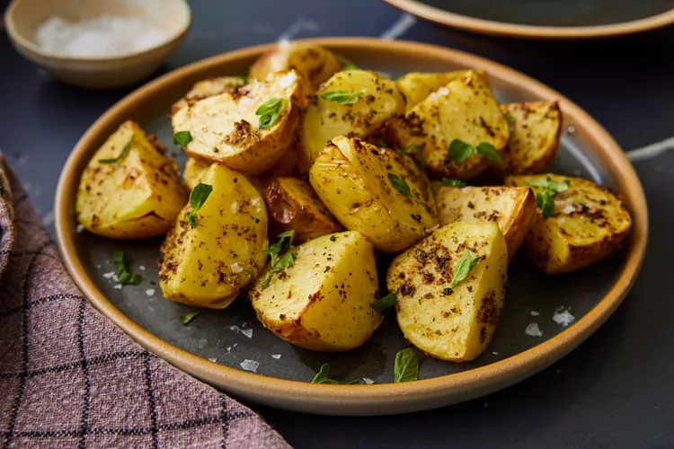

Best Potatoes You'll Ever Taste

Description
Its time to release my potatoes to the world!!! Watch your guests try to
guess what's in this delicious and simple recipe. It's the perfect side
dish to any meal or BBQ, and a great way to dress up those darn potatoes!
It's got me out of many a jam with entertaining. You cant go wrong. Since
trying these, I have gone completely potato crazy with mad potato
disease!!! Yum -- do it, mate! (Note: Only use real egg mayo - not the
other kind.)
Ingredients
- 3 tablespoons mayonnaise
- 2 cloves garlic, crushed
- 1 teaspoon dried oregano
- salt and pepper to taste
- 5 potatoes, quartered
Steps
- Gather all ingredients.
-
In a small bowl, mix mayonnaise, garlic, oregano, salt , and pepper. Set
aside.
-
Bring a large pot of salted water to a boil. Add potatoes, and cook
until almost done, about 10 minutes. Don't overcook otherwise the
potatoes will break apart. Drain, and cool.
-
Preheat oven broiler. Line a baking tray with aluminum foil, and lightly
grease the aluminum foil.
- Arrange potatoes in the prepared baking tray. Spoon the mayonnaise mixture over the potatoes.
- Broil in the preheated oven until potatoes are tender and mayonnaise mixture is lightly browned, about 10 minutes.
- Serve hot and enjoy!